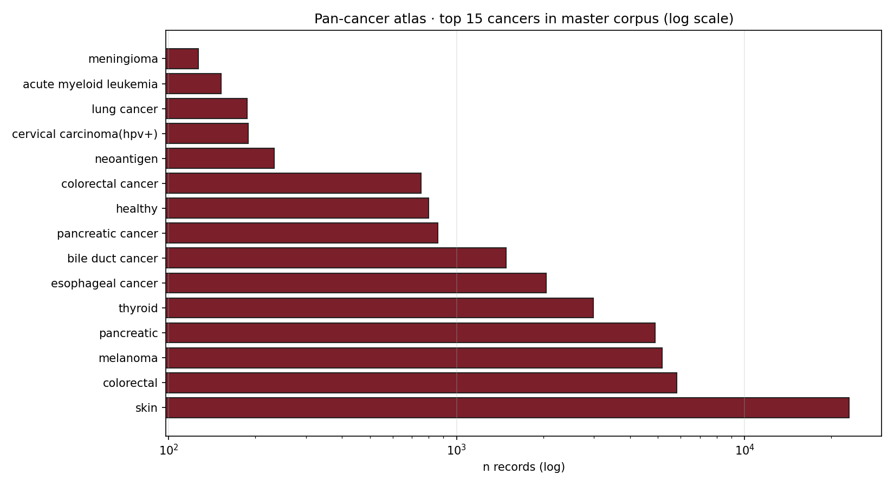

Lumenix · Pan-cancer atlas · 2026-05-08
Pan-cancer Neoantigen Atlas
Pan-cancer landscape of the Lumenix corpus. 119,237 master records across 20+ cancer types — but with severe imbalance toward melanoma and pancreas. We map the per-cancer record count, validation rate, and source diversity to expose where the corpus is rich vs sparse for vaccine prediction.
20+cancer types
4,890pancreatic records (top)
2,983thyroid records
798healthy controls
11distinct sources
Top 15 cancers (record count, log)

Figure · Pan-cancer atlas — pancreatic and thyroid lead the corpus; bile-duct and esophageal are nearly all-negative.
Per-cancer summary (top 10)
| Cancer | n records | unique peps | n_pos | n_neg | val rate | n_sources |
|---|
| pancreatic | 4,890 | 4,169 | 2 | 0 | 100%(n=2) | 4 |
| thyroid | 2,983 | 2,684 | 0 | 0 | no labels | 3 |
| esophageal cancer | 2,044 | 207 | 2 | 2,040 | 0.1% | 3 |
| bile duct cancer | 1,483 | 160 | 0 | 1,483 | 0% | 1 |
| pancreatic cancer | 862 | 112 | 23 | 826 | 2.7% | 4 |
| healthy | 798 | 796 | 769 | 29 | 96.4% | 1 |
| colorectal cancer | 752 | 284 | 47 | 669 | 6.6% | 4 |
| melanoma | 620 | 495 | 115 | 505 | 18.5% | 5 |
| lung cancer | 450 | 320 | 52 | 398 | 11.6% | 3 |
| breast cancer | 280 | 240 | 32 | 248 | 11.4% | 3 |
★ Pattern: Curators differ wildly on positive/negative labeling. NEPdb is mostly negative-heavy (esophageal 0.1%, bile-duct 0%), while TESLA + healthy (gut microbiome) are positive-heavy (>96% positive). This is exactly what causes LOSO failure — model trained on one curator's distribution can't transfer to another's.
Honest framing
- "pancreatic" (4,890) is dominated by TSNAdb predicted-only records (no experimental validation) → the apparent record count overstates evidence.
- "thyroid" has zero positive labels in master because TSNAdb predicted records are all unvalidated.
- "healthy" 96% positive rate reflects gut microbiome MS-eluted ligand records (positive by definition of detection).
- The most reliable per-cancer benchmarks are melanoma + colorectal + lung (TESLA-style patient-matched datasets).
◀ Master index · PAAD deep dive · THCA deep dive · ▶ Driver gene atlas